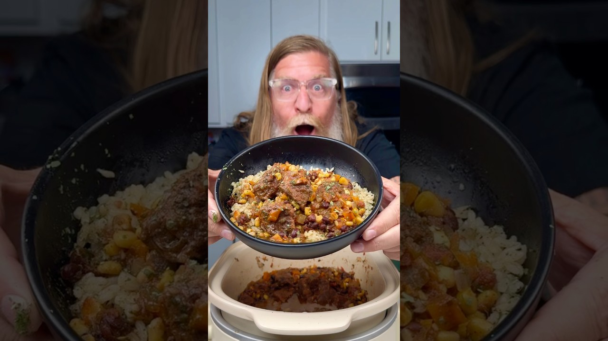

Reconstructed from the video's narration (spoken recipe) — the video has no written recipe in its description. Quantities and steps below are only those actually stated out loud; see "Gaps in this export" for what wasn't specified.
Source: Drew Cooks – YouTube
2 lb beef stew meat
Salt and black pepper
1/2 onion, diced
2–3 garlic cloves, chopped or minced
1 can black beans, rinsed and drained
1 can corn, drained
1 bell pepper (any color), diced
1 cup beef broth
~2 Tbsp taco seasoning
1 (16 oz) jar store-bought salsa (choose your heat level)
Cilantro, to garnish (optional)
Tortillas or cilantro lime rice, to serve
Put the beef stew meat in the slow cooker and season with salt and pepper.
Add the diced onion, garlic, black beans, corn, and diced bell pepper.
Add 1 cup beef broth and about 2 Tbsp taco seasoning.
Pour in the 16 oz jar of salsa. Stir well.
Put the lid on and set the slow cooker to low for 6–7 hours.
Serve as is, in tortillas, or over cilantro lime rice. Garnish with cilantro if desired.
Gap in this export: Can sizes for the black beans and corn
Gap in this export: Amounts of salt and pepper
Gap in this export: Number of servings